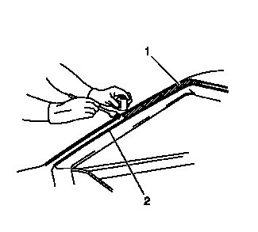
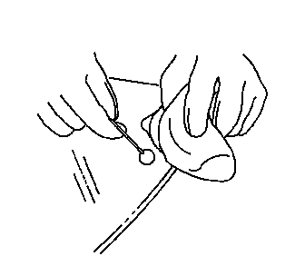
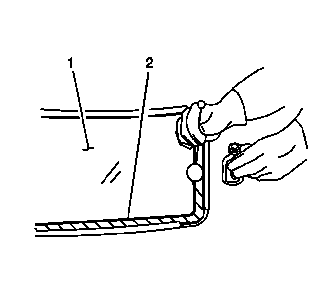
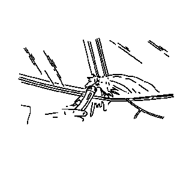

注意:如果夹焊凸缘存在腐蚀，或钣金件需要维修或更换，则必须整修夹焊凸缘以恢复粘结部位的强度。如果需要补漆，在喷涂颜色涂层前，盖住凸缘粘结部位，露出仅存底剂的清洁表面。
5.按说明修理窗洞后，执行以下操作：

警告：如果在涂抹底漆前未进行该区域的表面准备，则可能造成聚氨酯粘合剂粘性不足。如果聚氨酯粘合剂粘结不牢固，会使未系安全带的乘员从车中弹出，造成人身伤害。
注意:请勿将黑色底剂涂到夹焊凸缘原有的聚氨酯胶条上。只能在划伤、擦伤或已经涂过底剂的表面上涂底剂。
7.摇匀夹焊底剂至少 1 min。

注意:在车窗上涂抹透明的玻璃预处理剂时要务必小心。该底漆几乎立即变干，如果涂抹不均，可能会在车窗视区留下污迹。
13.用新的涂抹工具将透明的玻璃预处理剂涂在车窗内表面整个周边部位，厚度约为 10-16 mm (3/8-5/8 in)。立即用不起毛的清洁抹布将涂底剂的玻璃部位擦干净。

注意:黑色的玻璃底漆在涂抹至玻璃后 8 h内有效。玻璃的底漆表面必须保持干净。
15.摇匀黑色玻璃底剂至少 1 min。

注意:切勿用高压水流直接喷射刚涂抹的聚氨酯粘合剂。
26.轻轻地喷淋温水，立即对车窗进行漏水测试。